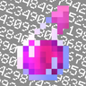

Docs / Mods
Potion Counter

How many potions, splash potions and lingering potions you carry.
Version 1.0.0 · Game 26.3 · Pinned to Horizon ba6344a, reads game state · Licence MIT · Source · Releases
Use it
| Command | What it does |
|---|---|
/potions |
Hides or shows Potion Counter |
| Option | Default |
|---|---|
| Shown | on |
| Split by kind | on |
| Show when none | off |
Switch it on or off in Options → Mods → Potion Counter; its settings page has one button per option. Install steps are in Install a mod.
How it is built
- Hooks:
native_hud,native_command,native_mods,native_settings,native_settings_click. - Logic and tests:
mods/potion-counter/mixins/potion_counter/runtime.rs. - Pinned: Horizon
ba6344a, horizon-mixinsd9c83d7. It reads fields of the game that are not part of the stable hook-point contract, so it must be re-checked when Horizon changes them.
Credit
Ported from PotionCounter (potioncounter) (see the upstream project); an independent implementation, with no upstream code or art. See Credits and Licensing.